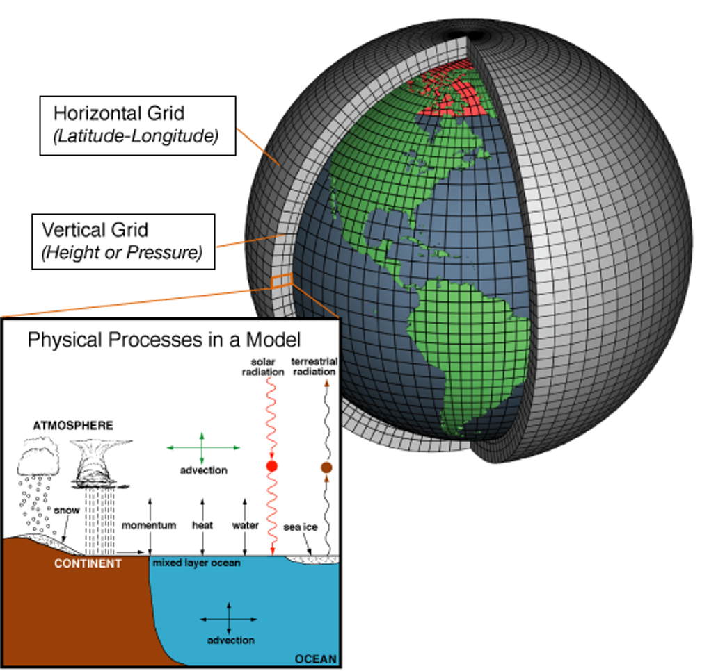

4 From NetCDF to a Map in R
4.1 CMIP6 data, explained in 10 minutes
4.1.1 What is NetCDF (and why CMIP6 uses it)?
NetCDF is a container for scientific arrays (e.g., temperature) plus dimensions (lon, lat, depth, time) and metadata (units, CF names).
CMIP6 outputs are saved as NetCDF because it’s compact and self-describing. We won’t cover NetCDF internals here—think of it as the standard file you download and open.
4.1.2 What is a raster (in R)?
A raster is how gridded data are handled in R (via {terra}): it’s what you plot, crop, reproject, and compute on.
In one line: NetCDF is the storage format; a raster is how we work with it in R.
4.2 Load libraries
library(terra)
library(maps)- Load the NetCDF file
# Change this to YOUR downloaded file
f <- "path/to/your/tos_Omon_GFDL-ESM4_ssp585_r1i1p1f1_gr_201501-203412.nc"
# Lazy connection to the NetCDF file (does not load everything into memory)
r <- rast(f)- Detect the variable
# Short variable name(s) in the NetCDF (e.g., "tos", "thetao", etc.)
vn <- tryCatch(terra::varnames(r), error = function(e) NA_character_)
# Use the first variable stack in the file (keeps this example generic)
r_var <- r[[1]]- Print key metadata (model, scenario, ensemble, units, resolution)
cat("\n================== METADATA ==================\n")
print(r)
# Parse common CMIP6 filename parts
fname <- basename(f)
parts <- unlist(strsplit(fname, "_"))
model <- if (length(parts) >= 3) parts[3] else NA_character_
scenario <- if (length(parts) >= 4) parts[4] else NA_character_
ensemble <- if (length(parts) >= 5) parts[5] else NA_character_
# Units may not always be present—handle gracefully
u <- tryCatch(units(r_var)[1], error = function(e) "unknown")
cat("\nModel name:", model,
"\nEnsemble member:", ensemble,
"\nScenario:", scenario,
"\nNative resolution (lon x lat, degrees):", paste(terra::res(r_var), collapse = " x "),
"\nVariable name(s):", if (is.null(vn)) "unknown" else paste(vn, collapse = ", "),
"\nVariable units:", u,
"\n=============================================\n\n")- Plot: first time slice (quick look)
# If a time dimension exists, take the first layer
if (nlyr(r_var) > 1) r_var <- r_var[[1]]
# Rotate longitudes to [-180, 180] for a clean world map
r_plot <- terra::rotate(r_var)
# Try to extract a timestamp (may be NULL depending on file)
tstamp <- tryCatch(as.character(terra::time(r_plot)[1]), error = function(e) "")
# Save a quick PNG to your project folder
png("quick_var.png", width = 1000, height = 600, res = 120)
plot(r_plot, main = paste("Quick Plot -", ifelse(is.null(vn), "variable", vn[1]), tstamp))
maps::map("world", add = TRUE)
dev.off()- Compute a global mean (first time slice)
mean_val <- terra::global(r_plot, "mean", na.rm = TRUE)[[1]]
cat("Variable plotted:", ifelse(is.null(vn), "unknown", vn[1]), "\n")
cat("Global mean value (first time step):", round(mean_val, 3), u, "\n")
cat("PNG saved:", normalizePath("quick_var.png"), "\n")